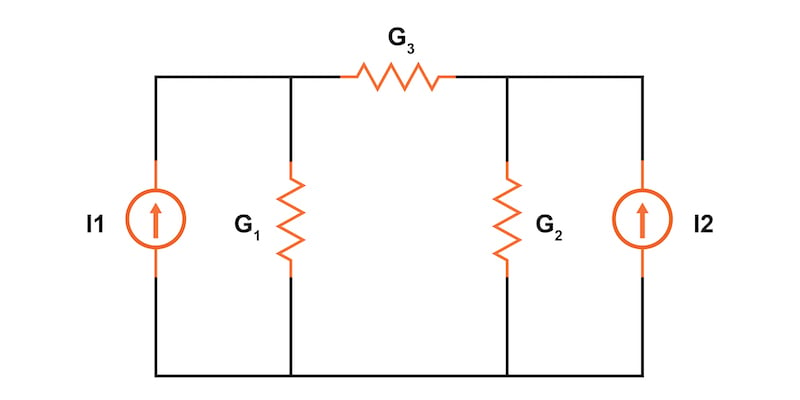
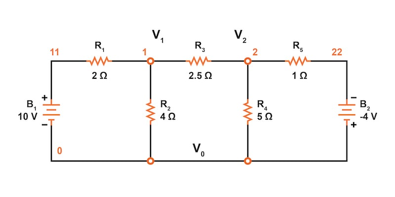
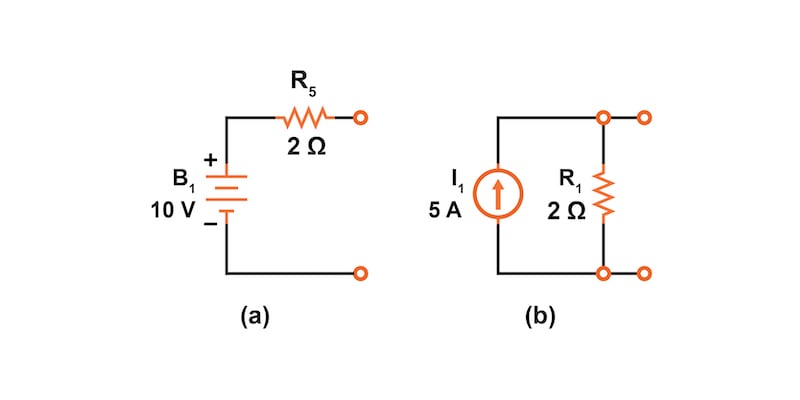
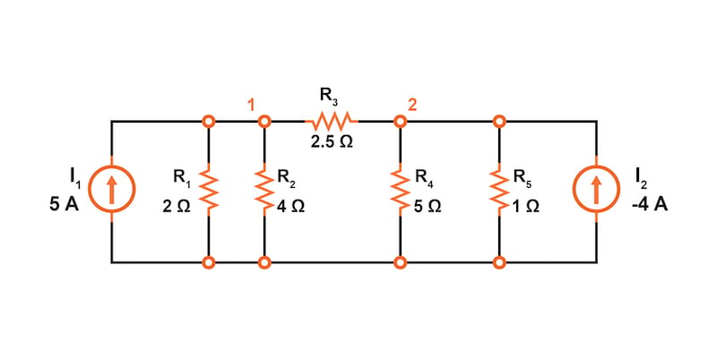
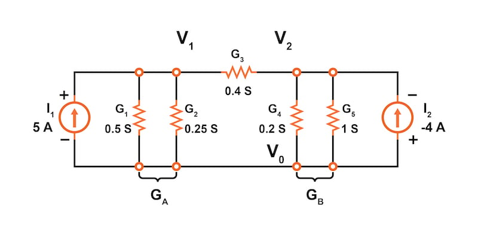
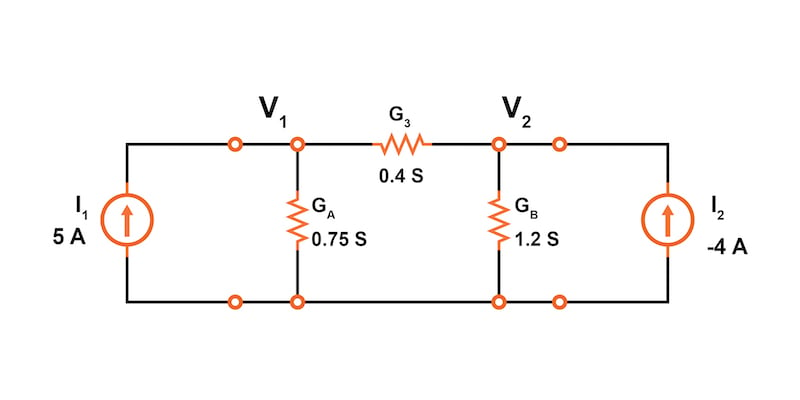
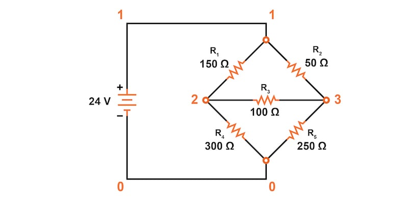

The node voltage method is a DC network analysis technique based on the structured application of Kirchhoff’s current law. This method involves converting voltage sources to current sources and replacing resistances with equivalent conductances.
The node voltage method of DC network analysis solves for unknown voltages at circuit nodes in terms of a system of Kirchhoff’s current law (KCL) equations. This analysis looks strange because it replaces voltage sources with equivalent current sources. Additionally, resistor values in ohms are replaced by equivalent conductances (G = 1/R) with units of siemens (S). Once understood, the node voltage method can provide a simple technique for quickly solving various complex circuits.
In this textbook page, we will demonstrate the node voltage method on two circuits, including an unbalanced Wheatstone bridge.
First, let’s start with a circuit having conventional voltage sources, as illustrated in Figure 1.
A common node, V0, is chosen as a reference point—this is typically the ground node in the circuit. The other unknown node voltages in our Figure 1 circuit, V1 and V2, will be calculated concerning this point.

Next, we need to replace all voltage sources and their associated series resistors with equivalent current sources and parallel resistors. The current source value is calculated as:
$$I_{source} = \frac{V_{source}}{R_{series}}$$
The voltage source, B1, in Figure 1 is in series with resistor, R1, which has a current source value of 5 A:
$$I_1 = \frac{V_{B1}}{R_1} = \frac{10 \text{ V}}{2 \text{ }\Omega} = 5 \text{ A}$$
The parallel resistance will be the same value as the series resistance. Knowing our current source and resistance values, we can draw our equivalent parallel circuit, as shown in Figure 2.

We need to perform the same voltage source to current source conversion for battery, B2, with a series resistor, R5, from our circuit in Figure 1.
$$I_2 = \frac{V_{B2}}{R_5} = \frac{-4 \text{ V}}{1 \text{ }\Omega} = -4 \text{ A}$$
From here, we can now redraw our circuit with two current sources and parallel resistors, as shown in Figure 3.

For all resistors in our circuit, we must now replace the resistance value in ohms with its reciprocal conductance value in siemens. The siemens is the unit of conductance, having replaced the now obsolete mho (inverse of an ohm) unit.
$$G_1 = \frac{1}{R_1} = \frac{1}{2 \text{ }\Omega} = 0.5 \text{ S}$$
$$G_2 = \frac{1}{R_2} = \frac{1}{4 \text{ }\Omega} = 0.25 \text{ S}$$
$$G_3 = \frac{1}{R_3} = \frac{1}{2.5 \text{ }\Omega} = 0.4 \text{ S}$$
$$G_4 = \frac{1}{R_4} = \frac{1}{5 \text{ }\Omega} = 0.2 \text{ S}$$
$$G_5 = \frac{1}{R_4} = \frac{1}{1 \text{ }\Omega} = 1 \text{ S}$$
We can update our drawing with these calculated conductance values (Figure 4).

At this point, we can also simplify the circuit by combining parallel conductors. We do this by simple addition. In our circuit of Figure 4, we have two sets of parallel conductors:
$$G_A = G_1 + G_2 = 0.5 + 0.25 = 0.75 \text{ S}$$
$$G_B = G_4 + G_5 = 0.2 + 1 = 1.2 \text{ S}$$
Our simplified circuit, ready for applying the node voltage method, is shown in Figure 5.

Following the node voltage method, we now write KCL equations for all unknown voltage nodes. In our example circuit, we have only two unknown node voltages, V1 and V2.
$$I_1 = G_AV_1 + G_3(V_1-V_2)$$
$$I_2 = G_BV_2 + G_3(V_2-V_1)$$
Equation 2.Let’s rewrite these two equations to demonstrate a pattern for writing these equations by inspection.
$$I_1 = (G_A + G_3)V_1 - G_3V_2$$
$$I_2 = (G_B + G_3)V_2 - G_3V_1$$
Equation 2.Note the similarity in these two equations. The sum of conductances connected to the first KCL node (GA + G3) is the positive coefficient of the first voltage (V1) at that node in Equation 1. Likewise, in Equation 2, the sum of conductances connected to that KCL node for V2 is the positive coefficient of the voltage, V2, in Equation 2. The other coefficients are negative, representing conductances between other non-common nodes.
For both equations, the left-hand side is equal to the respective current source connected to the node. This pattern allows us to quickly write the equations by inspection. If you can learn this relatively simple pattern for writing the KCL equations using conductances, the node voltage method can be useful for quickly analyzing many circuits.
From here, we can use the two equations to solve for the two unknown voltages in our circuit. We can substitute our known currents and conductances and rearrange them to order like terms.
$$I_1 = 5 = (0.75 + 0.4)V_1 - 0.4V_2 = 1.15V_1 - 0.4V_2$$
$$I_2 = -4 = (1.2 + 0.4)V_2 - 0.4V_1 = -0.4V_1 + 1.6V_2$$
Solving these simultaneous equations, we get the following results for our node voltages:
$$V_1 = 3.8095 \text{ V}$$
$$V_2 = -1.5476 \text{ V}$$
The solution can then be verified using SPICE based on the original schematic diagram with voltage sources. However, the circuit with the current sources could also have been simulated.
* Node Voltage Method circuit simulation V1 11 0 DC 10 V2 22 0 DC -4 r1 11 1 2 r2 1 0 4 r3 1 2 2.5 r4 2 0 5 r5 2 22 1 .DC V1 10 10 1 V2 -4 -4 1 .print DC V(1) V(2) .end v(1) v(2) 3.809524e+00 -1.547619e+00
Let’s look at another circuit analysis example using the node voltage method. The circuit of Figure 6 is called an unbalanced Wheatstone bridge, and it has three unknown voltage nodes plus the common voltage node, V0.

It’s important to note that we do not list the conductances on the schematic diagram. However, G1 = 1/R1, etc.
There are three nodes (V1, V2, and V3) to write equations for by inspection. Remember, the conductance coefficients are positive for conductors connected to the node we are developing the KCL equation for. All other conductance coefficients are negative.
Since we are too lazy to calculate the conductances for the resistors on the diagram, the subscripted G’s are listed for now as the coefficients.
$$I_1 = 0.136092 = (G_1+G_2)V_1 - G_1V_2 -G_2V_3$$
$$I_2 = 0 = (G_1 + G_3 + G_4)V_2 - G_1V_1 - G_3V_3 $$
$$I_3 = 0 = (G_2 + G_3 + G_5)V_3 - G_2V_1 - G_3V_2 $$
Next, we can reorder to align the unknown voltages to make it easier to solve the simultaneous equations:
$$0.136092 = (G_1+G_2)V_1 - G_1V_2 -G_2V_3$$
$$0 = - G_1V_1 + (G_1 + G_3 + G_4)V_2 - G_3V_3 $$
$$0 = - G_2V_1 - G_3V_2 + (G_2 + G_3 + G_5) $$
Again, we are so lazy that we will solve this using GNU Octave and enter reciprocal resistances and sums of reciprocal resistances into the Octave “A” matrix, letting Octave compute the matrix of conductances after “A =.”
The initial entry line was so long that it was split into three rows. The entered “A” matrix is delineated by starting and ending square brackets. Column elements are space-separated. Rows are “new line” separated. Commas and semicolons are not needed as separators. Though, the current vector at “b” is semicolon-separated to yield a column vector of currents.
octave:12> A = [1/150+1/50 -1/150 -1/50 > -1/150 1/150+1/100+1/300 -1/100 > -1/50 -1/100 1/50+1/100+1/250] A = 0.0266667 -0.0066667 -0.0200000 -0.0066667 0.0200000 -0.0100000 -0.0200000 -0.0100000 0.0340000 octave:13> b = [0.136092;0;0] b = 0.13609 0.00000 0.00000 octave:14> x=A\b x = 24.000 17.655 19.310
Note that the diagonal coefficients in the “A” matrix are positive, while the other coefficients are all negative, as they must be based on our rules for writing the node voltage method equations.
The voltage vector solution is given in “x”:
These three voltages are identical to the results we obtained using the mesh current analysis and SPICE simulation of the unbalanced Wheatstone bridge. This is no coincidence, for the 0.13609 A current source was purposely chosen to yield the 24 V used as a voltage source in that problem.